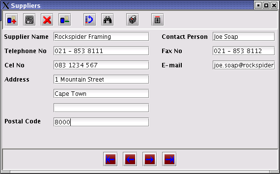

Navigate to Materials | Suppliers on the main toolbar.
The suppliers window will be displayed.
Click on the button to add a new supplier. All the data entry fields will be cleared.
Enter the supplier details as shown below. The
Supplier Name is compulsary.

Click on the Save button ( )
to save the information.
)
to save the information.
Repeat the process for each supplier that has to
be added. When finished, click on the
 button to close the window.
button to close the window.